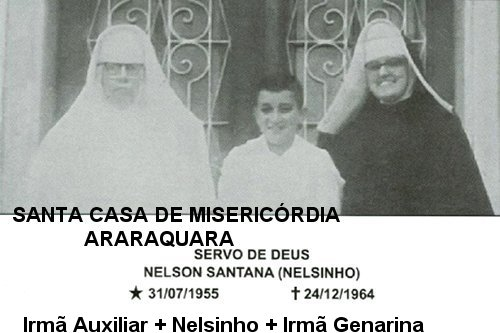
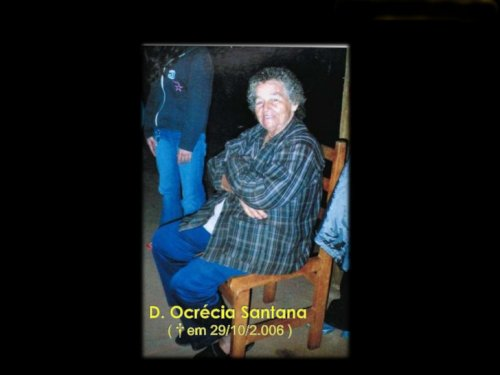
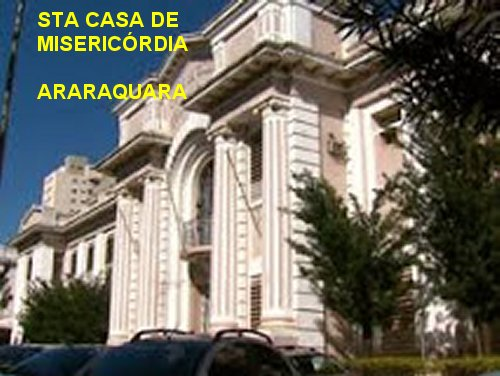
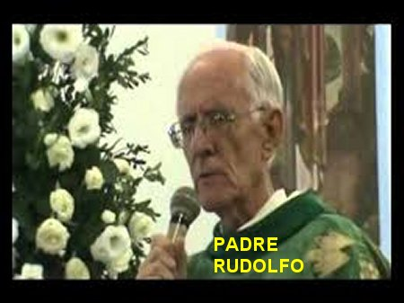
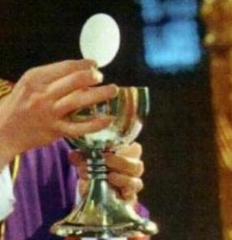
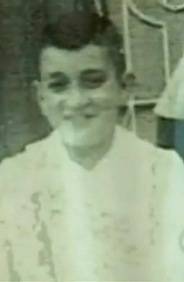

AMOR ILIMITADO
A FAMÍLIA E O ACIDENTE
NELSON SANTANA era filho de João Joaquim Santana e de Ocrécia Santana. Nasceu em Ibitinga, no dia 31 de Julho de 1955, na Fazenda Ronca no Estado de São Paulo. Era o terceiro filho de uma família com oito irmãos e irmãs. Seus pais eram pessoas pobres e modestos agricultores que trabalhavam na Fazenda, onde também residiam.
Como toda criança, um menino de 7 a 9 anos de idade, embora ajudando os pais na lavoura, sempre tinha um tempo reservado as suas brincadeiras e naturais peripécias próprias da idade. E aconteceu que numa dessas brincadeiras teve uma queda, levou um tombo e feriu gravemente o seu braço esquerdo.
Com a falta de recursos na Fazenda e a necessária atenção ao ferimento do braço, o problema evoluiu e o Menino suportando dores terríveis, foi conduzido e internado na Santa Casa de Misericórdia de Araraquara para o necessário tratamento. Lá permaneceu vários meses, sendo submetido a uma intervenção cirúrgica.
A GENEROSA IRMÃ GENARINA

Nelsinho adorou a idéia e foi com muita alegria que passou a ser evangelizado diariamente pela Irmã Genarina, que com uma carinhosa e eficaz pedagogia, colocou no coração do menino a imensidão do Amor de DEUS por todos nós, inclusive descrevendo a Obra Redentora do SENHOR, e como JESUS derramando o seu sagrado e precioso sangue, libertou a humanidade de todas as gerações, inclusive cada um de nós, da força terrível do primeiro pecado e dos pecados subsequentes.
A Irmã que era encarregada do Setor de Pediatria da Santa Casa encontrou no menino, um campo favorável, e aproveitou para tornar o ambiente das crianças que ali estavam internadas, mais alegre e divertido, ensinando-lhes e cantando músicas religiosas na companhia do Nelsinho: “O meu coração é só de JESUS. A minha alegria é a Santa Cruz. Nada mais desejo; nada mais quero, senão: que viva JESUS no meu coração!”
Era uma grande felicidade para aqueles pequenos e fervorosos corações soltar a voz e cantar com tanto amor. E por isso também, já no fim daquela primeira internação na Santa Casa, um pouco antes de receber a “alta Hospitalar”, Nelsinho prometeu a JESUS, não reclamar nada, aceitar tudo com tranquilidade no coração, levar a sua cruz cada dia e em cada hora, com a melhor disposição, sem resmungar, sem fazer cara feia e sem reclamar. E assim, quando ficou bom do braço, chegou o momento de retornar à Fazenda com seus pais. Enfim, reiniciar o trabalho de cada dia, seguindo o ritmo normal da existência. E foi com muitas lágrimas nos olhos que se despediu da Irmã Genarina e dos seus amiguinhos da Pediatria.
NA FAZENDA, JUNTO DA FAMÍLIA
Novamente em casa e no trabalho
de cada dia, sempre ajudando dedicadamente aos seus pais e irmãos, nos diversos
serviços da propriedade agrícola, agora com mais entusiasmo e 
Certo dia, Nelsinho voltou correndo do campo e foi direto encontrar a mãe que estava na cozinha preparando o almoço. E com muita angustia no coração falou: “Mãe, agora mesmo vou cometer um pecado muitão grande, um pecado feio; é duro falar, mas é um pecado mortal!”
A mãe muito assustada e cheia de aflição disse: “O que é isso Nelsinho, o que você quer me dizer?”
Ele abraçando o próprio corpo e esfregando as mãos disse: “Prometi a JESUS não reclamar quando tivesse que enfrentar a dor e o sofrimento. Mas agora, não estou suportando Mãe. A dor está muito forte. Meu braço está pior do que antes”.
Dona Ocrécia abraçou o filho e com palavras meigas e carinhosas, consolou Nelsinho dizendo:
- “Meu filho, mesmo que amorosamente você tenha prometido qualquer coisa a JESUS, que é tão bom e carinhoso, você precisa avisar a sua mãe das coisas que você sentir. Eu tenho de saber tudo o que se passa com você. Não é pecado nenhum você conversar comigo e me dizer, desde o inicio, que a dor estava voltando, e não esperar que ela crescesse tanto até ficar insuportável. Comunicar o que está acontecendo com você, não é de modo nenhum uma queixa. Vamos, vamos depressa chamar o seu pai, a fim dele levá-lo novamente ao Hospital”.

Retornando a Araraquara, ele e o pai foram recebidos atenciosamente pela Irmã Genarina, que logo buscou localizar o médico especialista e providenciou com rapidez as radiografias, as analises e a decisão do médico sobre o caso. Foi tudo muito rápido e só havia uma solução: “amputar o braço esquerdo do menino o quanto antes”.
Precisava a decisão ser comunicada a ele. Foi escalada a Irmã Genarina para lhe levar a noticia.
Nelsinho se revelou um menino compenetrado e corajoso, aceitando e acolhendo a verdade explicada pela Irmã, e não teve receios de dizer: “Entendi Irmã que será necessário a operação. Pode falar sem constrangimento, mesmo que seja para amputar integralmente o meu braço esquerdo, eu aceito. JESUS pode levá-lo, pois tudo o que é meu é DELE também”.
E assim aconteceu, Nelsinho foi operado, tendo o seu braço esquerdo amputado.
PADRE GERHARD RUDOLFO ANDERER
Pouco tempo após a intervenção cirúrgica do Menino Nelsinho, em Agosto de 1964 chegaram a Araraquara diversos Padres novos, Sacerdotes Redentoristas que vieram participar de um curso auxiliar para a formação religiosa. Entre eles estava o Padre Gerhard Rudolfo Anderer com apenas dois anos de sacerdócio, que na distribuição dos trabalhos assistenciais aos necessitados da localidade, o Padre Superior o designou além de outras atividades, dar assistência a Pediatria da Santa Casa, onde havia crianças de várias idades. Foi então, nesta oportunidade, que o Padre conheceu e travou um simpático relacionamento de amizade com o Nelsinho, que lhe contou estar nesta segunda internação, a oito meses distante dos seus familiares. Falou do problema do seu braço e das duas cirurgias. Disse ainda, que tinha sido preparado espiritualmente pela Irmã Genarina com uma excelente catequese, e que recebeu JESUS na Primeira Eucaristia, mas que desejaria, se fosse possível, recebê-lo todos os dias. Todavia os Padres que atendiam a Santa Casa de Misericórdia eram poucos e não tinham oportunidade de atendê-lo, pois estavam sempre muito ocupados.
Padre Rudolfo também se apresentou,
dizendo que era um Padre novo e que permaneceria em Araraquara até o Natal.
Acrescentou que veio participar de um Curso 
Satisfeito com o conhecimento, Nelsinho lhe perguntou: “Seria possível o Senhor trazer JESUS todos os dias para a minha Comunhão?”
Padre Rudolfo pensou um pouco nos seus horários e compromissos e lhe respondeu: “Sim, eu posso lhe trazer JESUS todos os dias, entre duas e três horas da tarde”.
O Menino ficou muito feliz e com um imenso sorriso de alegria agradeceu antecipadamente ao sacerdote desejando-lhe bom êxito no Curso que ia fazer.
E com toda pontualidade, todos os dias, entre duas e três horas da tarde, Padre Rudolfo passou a realizar o sonho que aquele Menino alimentava há algum tempo. A decisão do Sacerdote, realmente encheu o coração do Nelsinho de profunda alegria e seus olhos de um brilho celestial. Comungava e recolhia todo o seu ser no CORAÇÃO DE JESUS, com quem murmurando baixinho, passava a falar bem à vontade.
E repleto de felicidade, depois que fazia o seu “agradecimento a JESUS” conversava descontraidamente com o Padre, afirmando com convicção: “JESUS era amigo das crianças...” Mas, o Menino mesmo argumentava: “O que adiantava, se as crianças nada sabiam a respeito de JESUS? Por isso, desde criança, quero mostrar que sou o maior amigo DAQUELE que se fez criança para abrir as portas do Reino Celeste a todas as pessoas, e muito especialmente aos pequeninos e desprezados. É por isso que comungo todos os dias, porque gostaria que JESUS transformasse o coração das crianças, fazendo-as amá-LO com fervor e decisão”.
NO MOMENTO DOS CURATIVOS

Em muitas oportunidades, para não gritar de dor, beijava com força o Crucifixo que a sua amiga e confidente Irmã Genarina, colocou a sua disposição para os momentos de emergência. Realmente a Irmã era um Anjo colocado pelo PAI DO CÉU ao seu lado, a fim de ajudá-lo a ultrapassar os difíceis obstáculos que surgiam. E Nelsinho muito reservadamente lhe confiava: “Eu canto sempre baixinho no meu coração: O meu coração é só de JESUS. A minha alegria é a Santa Cruz. Em penas e dores, em dura aflição, que viva JESUS no meu coração; que viva JESUS no meu coração”.
Ele nunca pediu a JESUS a sua cura e nem que se abrandassem as suas dores. Porque também estavam presentes em seu coração, as dores terríveis e os flagelos abomináveis sofrido pelo SENHOR no cumprimento da sua Divina Missão Redentora. A Irmã testemunhava o quanto Nelsinho sofria com aquela imensa ferida. As crianças, os colegas da enfermaria, tinham muita pena dele, chegavam até a chorar. Ele se mantinha firme apesar das dores imensas, pois queria ajudar JESUS a “pagar o preço do pecado” pela experiência dolorosa do “abandono de DEUS”.
E conversando com Padre Rudolfo sobre a infinita grandeza da bondade de JESUS, com inequívoca modéstia, revelou mais profundamente a sua grande simplicidade de criança, dizendo: “Que queria sim, mas se JESUS também o quisesse; no próximo Natal passar junto DELE no Céu, para ajudar o meu amigo JESUS a fazer o bem a todas as pessoas aqui na Terra, uma vez que, com um só braço, pouco ou nada posso fazer para ajudar os meus pais nos trabalhos do campo.”
VÉSPERA DO NATAL, DIA 24 DE DEZEMBRO DE 1964
A sempre atenciosa Irmã Genarina,
vendo que Nelsinho não podia deixar a cama para festejar o Natal com as outras
crianças, decidiu preparar uma festinha ao seu lado. Combinou com as outras
crianças e na manhã da véspera, levou mesa, cadeira e os coleguinhas em grande
algazarra, para comemorarem junto dele, a 
Ela, sorridente e agradável falou: “Vamos armar o presépio, uma vez que você não pode levantar da cama. Assim, fica melhor para você”.
Nelsinho surpreendido, mas educadamente respondeu: “Mas, eu não vou estar mais aqui!”
A Irmã meio desapontada falou: “Explique-me isso? Como você não vai estar aqui se ainda não recebeu alta para voltar a sua casa?”
E isto aconteceu no exato momento em que chegava o Padre Rudolfo para se despedir dele. O Padre Superior Redentorista havia preparado uma escala dos Padres Novos, para ajudar aos Párocos das diversas Paróquias da região, que solicitaram auxilio na celebração do Natal. E ele, o Padre Rudolfo, foi escolhido para viajar a cidade de Fernando Prestes, logo após o almoço. Por essa razão, se deslocou até a Santa Casa a fim de se despedir do Nelsinho.
Mas então, observando aquele diálogo entre o Menino e a Irmã, Padre Rudolfo pediu a Religiosa para deixar as coisas ali e levar as crianças, porque ele queria conversar com o Nelsinho.
Assim que a Irmã saiu, o Padre perguntou: “Que história é essa que você falou a Irmã, que não estará aqui?”
Nelsinho admirado olhando para o Padre, falou: “O Senhor não se lembra? Aquilo que conversamos particularmente...”
O Padre refletiu e a seguir disse: “Ah! Agora entendo. Lembro-me da nossa conversa. Mas é verdade, mesmo?”
Nelsinho declarou solenemente com toda a convicção:
- “Hoje, ao anoitecer, JESUS vai me levar para o Céu!”
O Padre falou: “Então, você ia partir sem me dizer nada?”
Respondeu ele: “Claro que não! Agora mesmo conversava com JESUS sobre tudo isso”. E Nelsinho revelou particularmente muitas coisas bonitas ao Padre. Também voltou a falar nas crianças e do Amor que JESUS tinha por elas, razão porque ele queria comungar todos os dias. Pois desejava retribuir ao máximo o Amor de JESUS por ele, conquistando um máximo de crianças para o SENHOR. Disse ao Padre, que ele pediu a JESUS que abençoasse todas as crianças que encontrasse o Padre Rudolfo, mesmo que fosse rapidamente. Que todas as crianças fossem tocadas por JESUS. Nelsinho deu a entender ao Padre, que era seu desejo amar e ajudar a todas as crianças através dele, que era um Sacerdote amigo. E disse mais:“Todos os dias, na Santa Missa, no momento da Consagração, quando o senhor Padre levantar JESUS HÓSTIA, peça em poucas palavras o que deseja, pois eu estarei atento ao lado do SENHOR, para insistir com confiança, puxando a manga da túnica DELE e dizendo: JESUS atende ao Padre, atende todos os pedidos que ele faz. Tenho a certeza de que não vai falhar”.